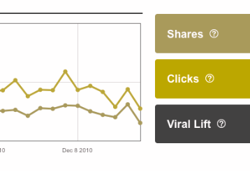

Color Theory For Web Developers
Color is the OG of Progressive Enhancement
We Remember Colors
Coca-Cola
Dark Navy and Orange
Bleed Cubbie Blue
Good Guys Where Black
Science And Art
Science
What is Color?
Color is About Light
Color is Light Reflection
Wave-Particle Duality
Different Wavelengths
=
Different Colors
Color is Perceived by Cones
Art
Colors Inspire Feelings
Colors Have Many Meanings
Science And Art
Warm vs. Cool Colors
Warm
Red, Orange, Yellow
Cool
Purple*, Blue, Green*
Warm Implies
Passion
Warm Implies
Energy
Warm Implies
Happiness
Cool Implies
Calm
Cool Implies
Professional
International Color Perception
Red Means Stop
Red Means Joy
White is for Weddings
Red is for Weddings
Black is for Funerals
White is for Funerals
Color Vs. Color
Colors Change Each Other
Colors Change Each Other
People See Colors Differently
Color Cones
Monochromacy
Dichromacy
Anomalous Trichromacy
Different Monitors
Different Lighting
Different Devices

Standards to guide us
WCAG 2.0 1.4.1 Level A
Color is not used as the only
visual means of conveying information,
indicating an action,
prompting a response, or
distinguishing a visual element
Shapes, Words, Colors, Size, Weight
WCAG 2.0 1.4.3 Level AA
The visual presentation of text and images of text has a contrast ratio of at least 4.5:1, except
Large Text (18+ point or 14+ bold point)
3:1
Incidental/Pictorial
Logotypes
WCAG 2.0 1.4.6 Level AAA
7:1
Large Text - 4.5:1
What Is a contrast Ratio?
MATH!
#990000
153,0,0
0.6,0,0
#bada55
186,218,85
0.72,0.85,0.33
L = 0.2126 * R + 0.7152 * G + 0.0722 * B
R, G, B Not so simple
if ( R <= 0.03928)
R = R/12.92
else
R ((R + 0.055)/1.055)^2.4
Lumiance Difference
Tools
Contrast Ratio
Apoc
Color Oracle
Summary
Practical Colors
Less is Often More
Consider Internationalization
Color Interaction
Don't Rely on Color
"Click the Red Button"
Color Has Meaning
People See Color Differently
Color Contrast